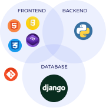

Oleg Gribanov
Trainee IT Specialist
Oleg Gribanov knows what education is and what development is. He studied a lot, and he also participated in the development of applications and web sites.
Oleg Gribanov has a degree in Computer Systems Technology from australian institute. He graduated from one of the Institute of Victoria State as an ICT specialist.
Oleg started my career as an IT manager. He worked as a Digital Manager for several years, but Oleg decided to move to another level and he wants to learn programming.
Oleg is a last year student at the Kangan Institute. I have been studying C#, Java, LAMP (Linux, Apache, MySQL, PHP), JavaScript, HTML5 and CSS3. He loves Atom, AWS and Github.
Oleg got 3 Cisco certificates, and he got a little experience in networking and systems administration as well. Oleg decided to take training in the Kangan Institute to become
Full Stack Developer because he would like to develop a company like Seek, Carsales, Gumtree, Atlassian, Google or Facebook. Now Oleg took a position of a Trainee IT Specialist
and Beginning UI Engineer. He lives in a suburb of Melbourne now. Oleg will be happy to rent cosy office in CBD for this startup.

Krasnoyarsk



Jhon Korobkov
Team Lead
Evgeniy came to startup as an intern with basic knowledge of HTML, CSS, JavaScript and the following goals:
• to put into practice the html, css, js stack;
• master and practice node.js;
• master and put into practice MySQL;
• master and put into practice auxiliary tools: git, npm;
• to master and put into practice the principles of UI / UX-design.
For a month of internship, a project was done on the front end (using HTML, CSS, Javascript, React) and back-end (Node.js, MySQL).


Victor Urusov
Fullstack Developer
Viktor joined a startup as an Intern.
The intent had been:
• Practical work training to create their website;
• Introduction to popular frameworks and libraries;
• Study and application JS, JQuery in practice;
• Learn English from scratch;
• Update professional profiles and social media accounts.
Victor has not been through practical experience development and English. He immediately set to work.
In one month in regime intensive and solid involvement with mentor all goals achieved.

Melbourne
Jane Spirina
Big Data Expert
Decisions of Jane draw on a combination of quantitative methods and product intuition to find actionable insights that drive key product decisions at CodesFord,
answering questions such as: what makes a course great? Are ratings a reliable signal of course quality in a two-sided marketplace? How should courses be priced to
reflect their value? What are the drivers of long-term customer satisfaction? What bottlenecks exist in the course creation process?
As a Big Data Expert at CodesFord, Jane is responsible for leading a team of decision devs who could be focused on a variety of different data-driven projects.
This role isn’t about working in a single well-scoped area. Rather, Jane is a sharp, independent data leader with a talent for drawing structure out of ambiguity,
a relentless focus on driving meaningful business impact, and a passion for improving lives through learning!
Here’s what Jane is doing:
• Recruit, hire, and retain an amazing team of high caliber decision devs;
• Provide hands-on technical guidance and career mentorship for team members;
• Collaborate with devs to define CodesFord’s long-term data strategy/vision;
Partner with cross-functional leaders to shape the product roadmap and drive execution;
• Maintain high quality standards for data science work and recruiting;
• Build CodesFord’s technical brand through talks, blog posts, and publications.
Jane has:
• 2+ years of experience managing and growing high performance data science teams;
• 5+ years of industry experience in a decision science context;
• Ability to communicate effectively with non-technical stakeholders;
• Strong knowledge of applied statistics, experimental design, and causal inference;
• Proficiency with SQL and programming languages;
• Domain experience in educational assessment and psychometrics;
Experience using big data technologies.

Moscow

Maria Volkova
Head of Marketing
Maria joined a startup as an Intern.
The intent had been:
• Practical work training to create marketing strategy;
• Introduction to popular marketing tools;
• Analyze competitors, reveal their pros and cons and find our points of differentiation;
• Split product development into stages;
• Identify channels of user acquisition and profit.
Maria has not been through practical marketing experience.
She immediately set to work. In one month in regime intensive and solid involvement with mentor all goals achieved.

Moscow

Stanislav Ivanov
Marketer
Stas joined a startup as an Intern.
The intent had been:
• practice of creating a marketing strategy;
• learning basic site metrics;
• learning with basic analytics tools;
• pumping social networks.
Stas has not been through practical experience. He immediately set to work. In one month in regime intensive and solid involvement with mentor all goals achieved.
Tolyatti

Ivan Nikitochkin
Quality Assurance Manual & Automation Test Engineer
Came to a startup as an intern.
As part of the internship, the following goals were set:
• Gaining hands-on experience in manual testing;
• To master and apply in practice automation in testing;
• Familiarity with basic testing tools;
Ivan has not been through practical experience. He immediately set to work. In one month in regime intensive and solid involvement with mentor all goals achieved.